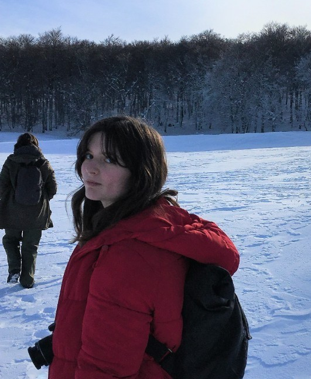

Hello! I’m Solène, and this is my personal website where I showcase my work and CV. I’m from France, and I’ve had the opportunity to conduct research and travel in the UK, Germany, the United States, and Japan. I graduated with a Bachelor’s degree in Biology in 2019 from Université Paul Sabatier (Toulouse, France), and a Master’s degree in Evolutionary Biology in 2022 from the Université de Lille. During my studies, I completed several internships in international research institutions, where I developed a strong interest in paleoecology. I particularly enjoy using virtual approaches such as modelling, computational fluid dynamics (CFD), and imaging techniques like CT scanning to investigate paleontological systems. Through these methods, I aim to better understand the evolution of organisms and their environments, and to draw connections with modern environmental challenges. I am also passionate about science communication. I enjoy combining my scientific background with artistic and 3D skills to make science more accessible and engaging for a wider audience. Feel free to explore my CV and Research sections for more details about my work. Outside of research, I enjoy creating, spending time in nature, and exploring new places. I’m always up for new adventures! You can also visit my Gallery section to discover more about my creative projects and photography.